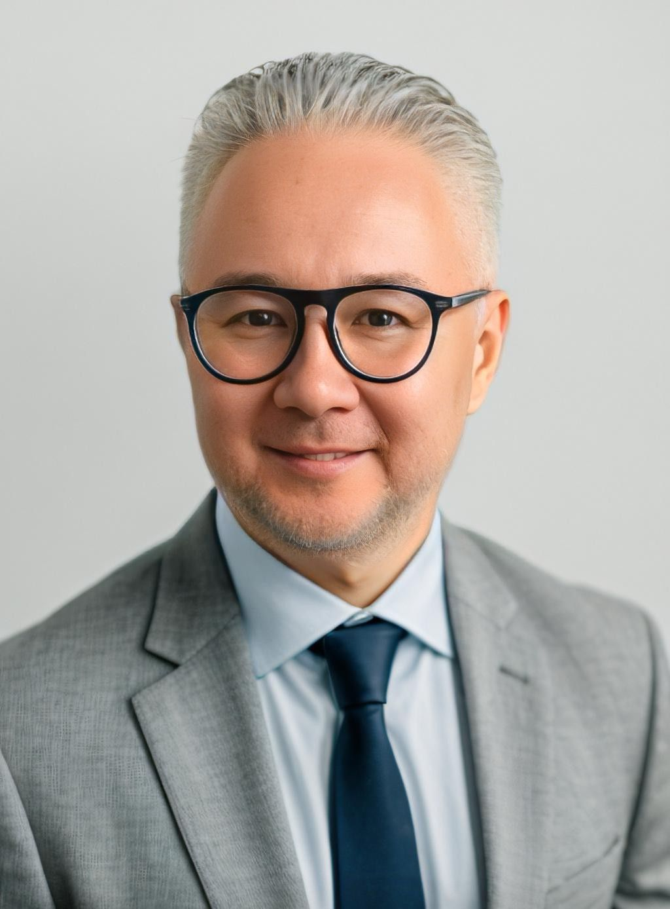

АБAskar Bapen
Генеральный директор KAIZEN-TRIZ PARTNERS
Я начинал как дипломат. Арабский и английский языки, длительные командировки на Ближний Восток, международные переговоры, EXPO-2017 в Астане - координировал участие 115 стран. Там я понял: одного системного взгляда недостаточно. Нужны конкретные инструменты.
Когда перешел в бизнес-консалтинг, начал изучать Кайдзен и Lean. Это закрывало 90% задач - потери, процессы, стандарты. Но оставались задачи, где любое решение упиралось в противоречие.
Например: ЕСЛИ увеличить штат отдела продаж, ТО вырастут продажи, НО вырастет и ФОТ. ЕСЛИ оставить штат как есть, ТО ФОТ не изменится, НО и продажи не вырастут. Кайдзен здесь не давал ответа.
Поиск инструмента для таких задач привел меня к Бизнес-ТРИЗ. Я прошел путь от первого уровня до Мастера Бизнес-ТРИЗ. Под руководством Валерия Сушкова, президента IBTA, разработал инструмент P2R по поиску скрытых ресурсов в бизнесе. Сегодня таких специалистов в мире семеро.
в цифрах
Регалии
-
01
Мастер Бизнес-ТРИЗbiztriz.net
-
02
Официальный представитель IBTA в Казахстане и Центральной Азии
-
03
Сертифицированный тренер Toyota Production System (TPS Grade 4)
-
04
Дипломированный тренер Kaizen Center
-
05
Дипломат, арабист - координировал участие 115 стран на EXPO-2017 в Астане
книга

Amazon
Focus Mastery in Uncertainty
Инструменты удержания фокуса и принятия решений в условиях неопределенности.
Читать на AmazonЭкспертиза
- 1 из 7 Мастеров Бизнес-ТРИЗ в мире
- Kaizen/Lean - практик
- 20+ завершенных проектов
- 115 стран на EXPO-2017
- Автор книги Focus Mastery in Uncertainty
- Сертифицированный тренер Toyota Production System
- Официальный представитель IBTA
- CEO KAIZEN-TRIZ PARTNERS